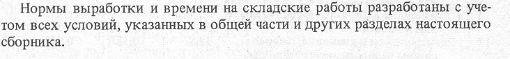

5.1. Тарно-упаковочные и штучные грузы 5.2. Мясные грузы без упаковки 5.3. Тяжеловесные грузы 5.4. Металлы и металлические изделия 5.5. Зерновые грузы 5.6. Овощные грузы 5.7. Лесоматериалы 5.8. Навалочные грузы